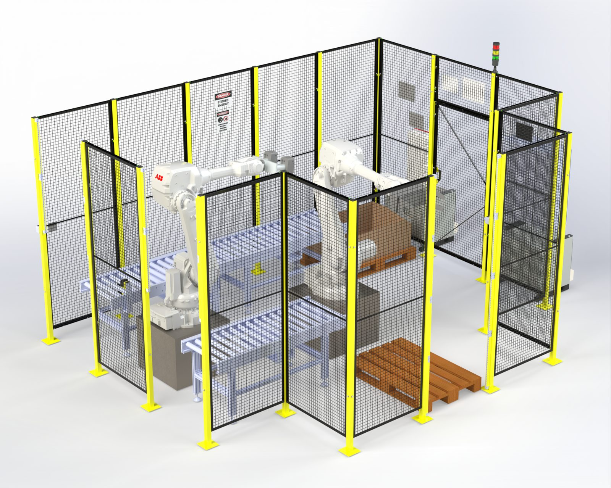
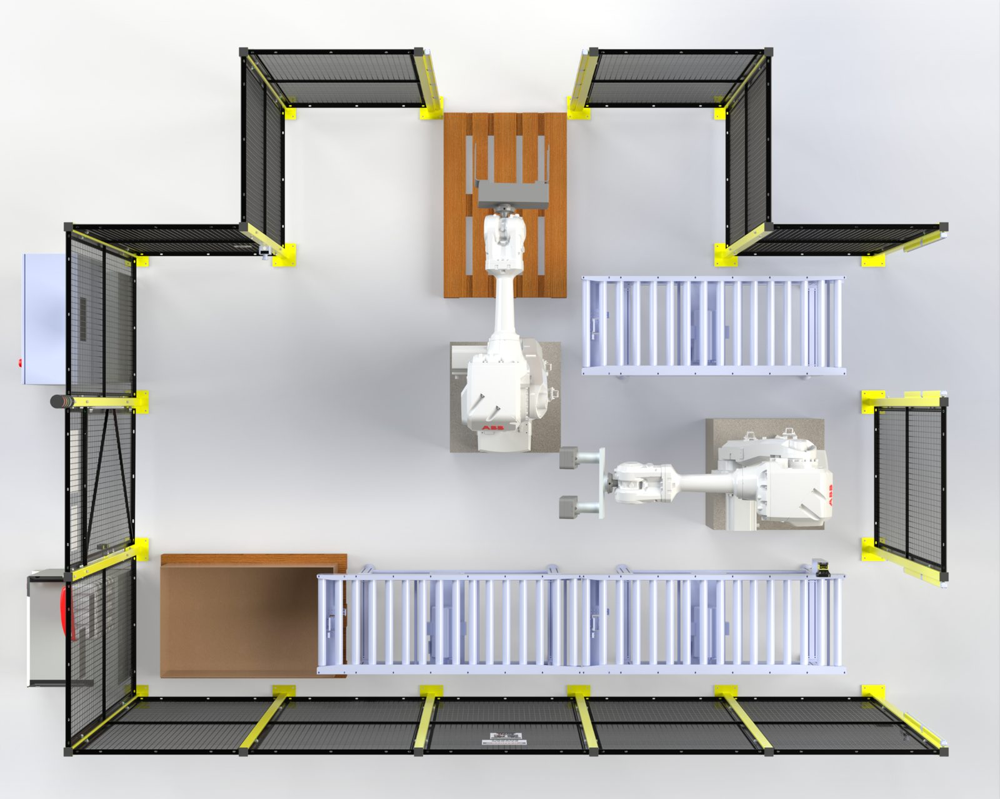
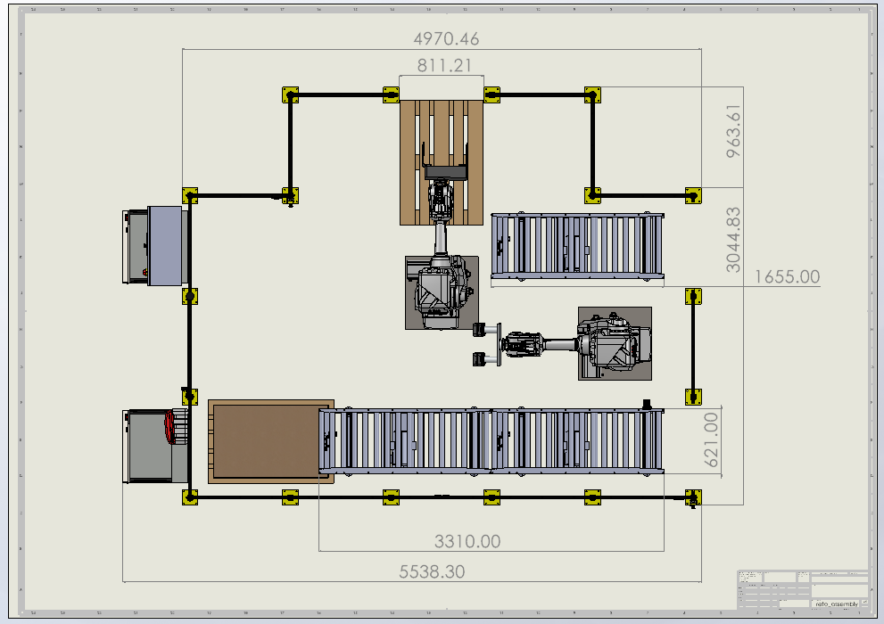
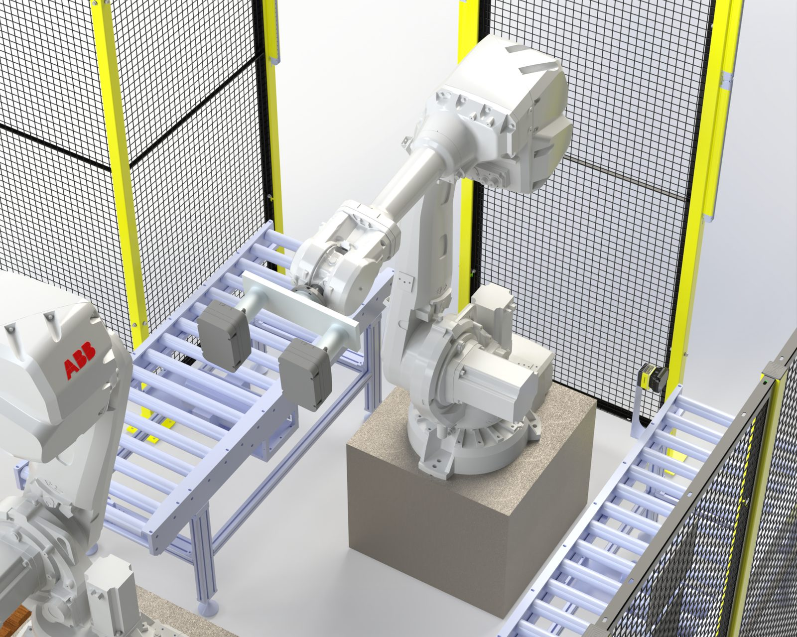
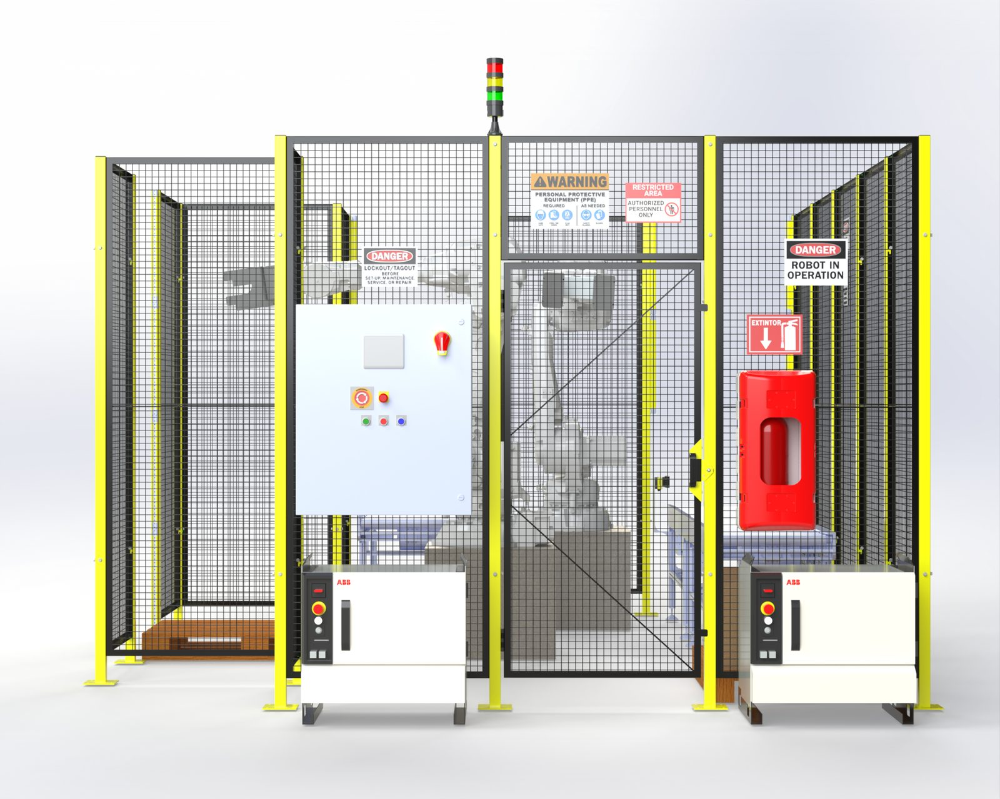
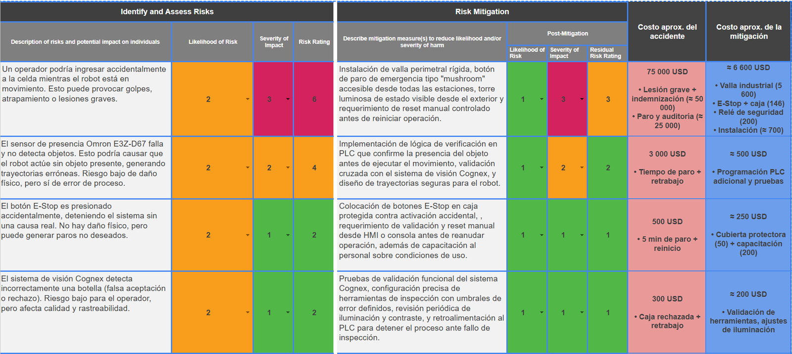
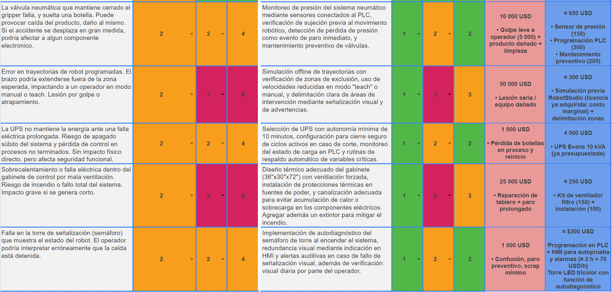

Robotic bottle packaging cell
A robotic cell that replaces manual bottle packing by two operators, built around two ABB IRB 4600 robots, Cognex inspection and a full safety design. Every result on this page comes from the design and its simulation. The cell was not built.

- Cycle time, from 60 s by hand
- 38 s Simulation
- Packing error rate, from 5%
- 1% Projected
- Cumulative ROI at 3 years
- 338% Projected
- Hazards analyzed, top three cut from 6 to 3
- 9
The challenge
Two full-time workers packed bottles by hand on a production line. The client's request for quotation (RFQ) described long cycle times, frequent errors and constant ergonomic and operational risk for the operators. The task was to design a cell that automates the packing and meets international robot safety standards.
What I did
- Worked on the full safety analysis: a risk matrix of nine hazards, each rated for likelihood and severity before and after mitigation, with the cost of every accident and every mitigation, against RIA R15.06-1999, ISO 12100, ISO 13849-1, ANSI Z535 and SIL.
- Helped source the mechanical models and lay out the cell: a bottle line and a box line served by two ABB IRB 4600 robots, inside perimeter fencing with an interlocked access door.
- Worked in a team of four that also covered the electrical and control design (PLC, Ethernet/IP), Cognex vision inspection, the RobotStudio simulation and the financial analysis.
Cell layout
The cell has two lines. On the bottle line, bottles pass an inspection station, reach a pick point, and any bottle that fails inspection drops into a reject box. On the box line, empty boxes advance and stop to be filled. One robot sits between the lines and moves bottles into boxes. A second robot at the end of the box line lifts the full boxes onto a wooden pallet.
-

Top view of the CAD model. -

Technical drawing with the main dimensions. -

The bottle robot with two SMC grippers mounted in parallel, so it picks two bottles at once. -

Front of the cell: control cabinet, emergency stop, extinguisher and signage.
Safety analysis
The analysis covered nine hazards. Each was rated by likelihood and severity (rating = likelihood × severity), then rated again after mitigation. Mitigation lowered the likelihood in every case, so the three hazards rated 6 fell to 3. In eight of the nine, the mitigation costs less than the accident it prevents. The UPS was already in the budget.
| Hazard | Rating | Accident cost | Mitigation cost |
|---|---|---|---|
| Operator enters the cell while the robot moves | 6 → 3 | 75,000 | ≈ 6,600 |
| Presence sensor fails to detect an object | 4 → 2 | 3,000 | ≈ 500 |
| Emergency stop pressed by accident | 2 → 1 | 500 | ≈ 250 |
| Vision system wrongly accepts or rejects a bottle | 2 → 1 | 300 | ≈ 200 |
| Gripper valve fails and drops a bottle | 4 → 2 | 10,000 | ≈ 650 |
| Programmed robot path leaves the expected zone | 6 → 3 | 50,000 | ≈ 300 |
| UPS cannot carry the cell through an outage | 4 → 2 | 1,000 | 4,000, already budgeted |
| Control cabinet overheats or shorts | 6 → 3 | 25,000 | ≈ 250 |
| Signal tower fails and misreports the robot state | 4 → 2 | 1,000 | ≈ 300 |
The safeguards in the design: a rigid perimeter fence with an interlocked access door, mushroom emergency stops reachable from every station, light curtains on the open sides, a traffic-light signal tower, ANSI Z535 safety signs, a fire extinguisher, and a manual reset before the cell restarts.
See the original risk matrix from the report


Results
Packing cycle time. The simulated cell was validated in ABB RobotStudio.
Packing error rate.
Cumulative return on investment, from the team's financial analysis of the initial investment, annual operating cost, labor savings, higher output and fewer errors.
- Manual operation
- Hatched: simulation and projection
Watch the team's RobotStudio simulation on YouTube.
Figures, tables and results come from the team's final report for the course, dated May 4, 2025.